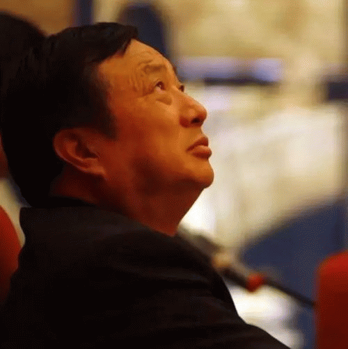

@Lingxian_Kong 什么时候有了“华为加西亚”这个称号的？恭喜肉身翻墙了。我倒不觉得移民就是好，只是觉得知道自己想要过什么样的生活，并且有勇气去追求，就挺好的。不惧，不悔。@外刊IT评论:【任正非你别致歉了，“华为加西亚”孔令贤早已经技术移民了】#荣耀9#从任正非的三封内部邮件可以看出，华为的高管和基层年轻员工之间确实缺乏了有效的沟通机制，公司的官僚体系急需被打破。任正非渴望与年轻人的沟通。希望任正非的这次高调道歉，能让华为不再有更[...] 网页链接 